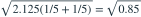
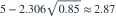

两个独立正态总体方差相等。两样本量均为 5，样本均值为 15、10，无偏方差均为 2.125。给定 ，均值差 95% 区间下限约为？
- A2.67
- B3.12
- C3.36
- D2.87
我已思考，展开答案与解析
正确答案：D
- 合并方差为 2.125，标准误为

。下限为
。
易错提醒先明确分布参数、独立性和统计量的定义，再进行计算。
用户提供练手卷 · 原第 17 题；题目 PDF 第 3 页
单选改编；题干与选项已重新编排

。下限为
。用户提供练手卷 · 原第 17 题；题目 PDF 第 3 页
单选改编；题干与选项已重新编排